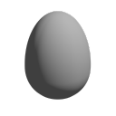

name origins
— in which i tell some storiesI’ve made some fun names over the years, quite a few persist to this day, but many also correlate to things which don’t exist anymore, this post’ll just list a few of them.
my username
For the past few years I’ve gone by 1e1001 everywhere, but I haven’t always. before I had any online presence at all (child) we had an Xbox 360, on which one of the accounts I believe was titled “JackPumpkin51” (I think it was some sort of default / automatic account name?) which I’d always use when playing Minecraft or N+ or whatever Kinect nonsense we had from XBLA.
Several years later I got Minecraft on the computer, and had to create a Mojang account for that, and either that username was already used, or I just didn’t want that to be my username anymore, so my dad suggested the name ¹ and I just went with it. For quite a few years after that I just used that as my name (except for the one month where I changed it to something else and then went back because I didn’t like it).
One day I had the idea of making a 2nd Twitter account (for some reason? I don’t remember but there was some silly reason for it) and wanted to create some short name, so I typed 1e100 into the name box (I liked the idea of being the number or something and/or “impersonating” a company), and because someone else had that username Twitter decided my handle would be 1e1001, so I just went with that as my username because I decided that’s a better name, and over time switched my older accounts in other things to be that. my original icon for that account involved a square with numbers², and somehow I’ve kept that branding up throughout my account’s life.
I’ve also gone by the name before, a reference to this icon from Geometry Dash, because I needed to think of an account name, not sure why I didn’t just go with my regular name but that’s one I sometimes use for things.
the asyl
Most of this history is reconstructed from old DM’s with people³, the dates are a bit fuzzy and there’s probably some things wrong.
In a “real friends group” Discord guild I’m in, one of the members, Bridget, was running a bot simply titled “penny bot”. I believe it was run using some online bot-making service, and one of the commands on it was !die [username] which would generate a Minecraft-like death message for the appropriate user (or for yourself if a user wasn’t specified). Eventually that bot got removed (I believe from Bridget not wanting to deal with maintaining it) and because I was vaguely interested in making a Discord bot at that same time, I decided to make a “successor” to it, initially titled hbot and having  this profile picture, it contained an updated version of that command and a few other silly features⁴.
A while later, we needed a Discord bot for a somewhat more professional guild (some vague game-dev thing), instead of just inviting the old bot, it was suggested that we get a new bot, and just reuse the same source code for it, when asked for a name I was told:
| 2020-09-06 21:10 | |
|---|---|
| arsentical | on second thought |
| we might want to name it something more professional | |
| 1e1001 | what do u mean |
| arsentical | the name |
| 1e1001 | yes |
| arsentical | not hbot |
| 1e1001 | ok |
| then what | |
| arsentical | uhhh |
| antisys | |
| ? | |
| 1e1001 | antisys? |
| sounds cool | |
| arsentical | stylized AntiSys or AntiSYS |
| … | |
| arsentical | I prefer AntiSYS |
And thus AntiSYS became the name. Over the years I rewrote the bot’s source several times, peaking off at AntiSYS5 or 6⁵, mostly because I wanted to make a generalized plugin system in typescript and that is Hard™. during that time I got too lazy to write the full AntiSYS name, so I’d often abbreviate it to asys. After my departure from that group I still wanted to keep developing that bot (since it turns out that it’s somewhat fun to rewrite the same thing over and over again⁶). I was first just making some silly single-use bots to test out some ideas, Including things like “bot that lets you run a Linux terminal” (horribly insecure), and “bot that lets me test a lisp”. During that time the bot was simply called micha.ts⁷, but after a while I decided to shorten it even more and rename it to be asy⁸. And because it’s called that I decided to name the language “asy lisp”, or asyl. Even though the current version is not asy nor a lisp, I like the name so I’m keeping it.
the game engine
I’ve wanted to make my own game engine for making games for the past while, but my current game engine actually started off as a UI toolkit I was making to try to run on my Raspberry Pi’s little 480x320 touchscreen, I called it nanoscale at the time because I wanted it to be a really lightweight engine. Problem was I was using OpenGL’s immediate rendering, a 2D linked list for the widgets storage, and also C++, so it was somewhat terrible to work with.
I then wanted to make something similar, and after trying out and not liking some C# game-making things, I decided to rewrite some thing in OpenGL & C, which I called gle, for “openGL Engine”. after pursuing that for a while I rewrote it with Vulkan & C++, so the name became vke for “VulKan Engine”. We then⁹ wanted to try to finish the game engine and use it for actual games:
| 2021-08-28 18:20 | |
|---|---|
| arsentical | can you work on the engine |
| (what was it even called again? we need a better name..) | |
| 1e1001 | vke |
| arsentical | what does that even stand for again |
| 1e1001 | literally just |
| arsentical | and, what can we name it |
| 1e1001 | vulkan engine |
| arsentical | that is 10 levels of stupid |
| 1e1001 | yup |
| well i dont have a better name | |
| and the old one was gle lmao | |
| arsentical | i wanted to name it pioneer but that already exists as a game |
| honestly who cares, let's name it that anyways | |
| … | |
| arsentical | if not pioneer i was gonna name it after one of my old projects, because they were all named after stars and sounded cool |
| 1e1001 | because like yeah i wanna use this in other games so we need some good name for it yeah |
| hmmm | |
After a while I decided to rewrite the engine in Rust (I’m sensing a common pattern here), and really didn’t like the name pioneer, so I asked for another name and was given horizon, so I went with that for a while. After going with that for a bit I also decided to rewrite it (architectural debt is my excuse), and this time I called it gamework, because I realized it’s more of a game framework than an engine, and that’s kind-of the current name (I need to rewrite it again, we’ll see what it’s called then)
generalization &c
I guess I really like doing vague wordplay for the names, especially the “no thoughts head empty” → “noughts hempty” kind of portmanteau¹⁰. I’ll be keeping that up for future projects most likely, it’s a really easy way to come up with fairly unique names.
In other news, the next posts (including this one) will probably just be whatever I can think of, my lang-dev motivation hasn’t been too high at the moment, especially with all the random side projects I’m partaking in. maybe I’ll rewrite my website again,
-michael